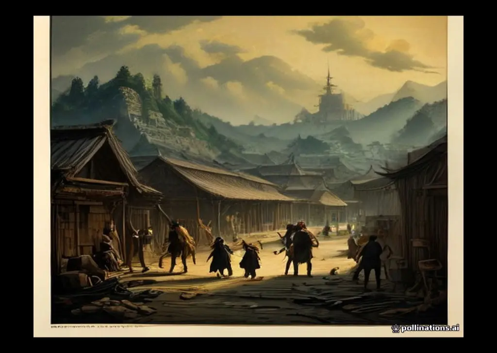
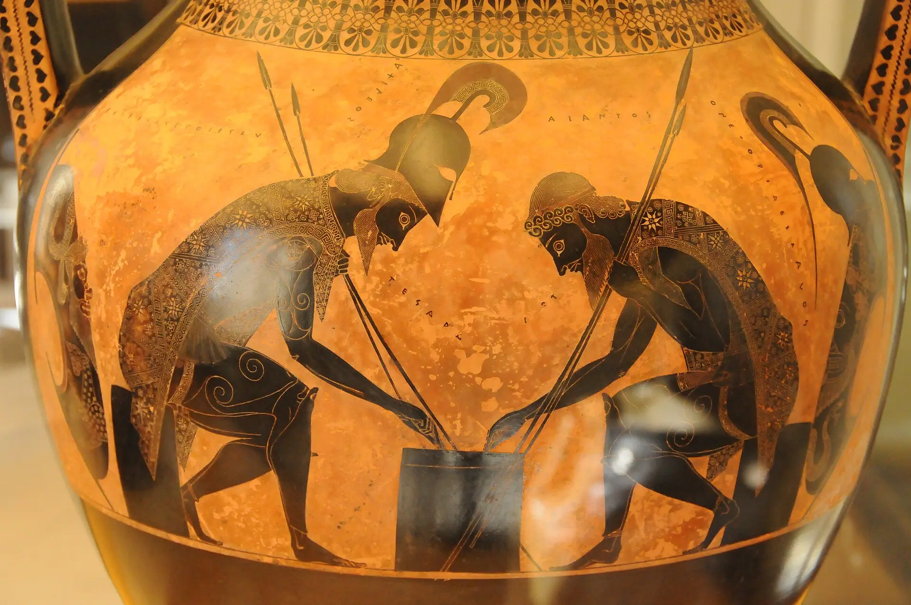

织机与长弓——史诗中的女性
荷马史诗是男人的战场，但撑起两部长诗骨架的，是一群女性：女神、王后、公主、女俘、老乳母。读她们，能读出史诗最柔软也最锋利的一面。
荷马史诗是男人的战场，但撑起两部长诗骨架的，是一群女性：女神、王后、公主、女俘、老乳母。读她们，能读出史诗最柔软也最锋利的一面。
《伊利亚特》第十八卷，战事正酣，诗人却按下了暂停键，用了约一百三十行，描写神匠赫菲斯托斯为阿喀琉斯锻造新盾。这段"盾之描写"是西方文学最早的器物诗，也是全诗的隐藏核心。
荷马是西方第一位"小说家"——尽管他写的是诗。两部史诗的叙事技巧，至今仍是写作课的范本。
荷马之后，几乎没有一位西方作家能绕开他。读懂他的接受史，等于拿到了半部西方文学史的地图。
《伊利亚特》出场人物逾百，以下按阵营整理最要紧的名字。初读记不住不必勉强——读到再查即可。
《奥德赛》的人物围绕"一条等待的线"展开：海上漂泊的奥德修斯、海上寻子的忒勒马科斯、宫中织布的珀涅罗珀，以及一屋子等死的求婚者。
荷马笔下的神明不是道德偶像，而是有情有欲、爱恨分明的"大人物"。以下按立场与戏份整理。
荷马的地理横跨爱琴海两岸：一边是战场与王城，一边是归途上的妖岛险峡。
史诗里的器物往往自带剧情。认识它们，等于握住了一串情节的钥匙。
读懂史诗的几个关键词。它们不是生僻的学术黑话，而是英雄世界运转的齿轮。
从青铜时代的战火，到今天的课堂——史诗走过的三千年。
以下引文均为白话转述（不是译本原文），标注原诗出处，供对照原译时按图索骥。
荷马的两部史诗并非特洛伊战争的"全集"。古代其实有一整套同题材史诗，合称"史诗循环"（Epic Cycle），把战争从起因写到诸英雄的最终归宿。可惜除《伊利亚特》《奥德赛》外，其余六部全部失传，只在一部古代解题书里留下了梗概。本辑以白话复原这六部——从《塞普利亚》开始。
《伊利亚特》在赫克托耳的葬礼中收束，但阿喀琉斯还活着。《埃塞俄比斯》接续其后，讲完第一勇士的最后五天——这也是整场战争里最富异域色彩的一卷：两位"外来的救星"先后驰援特洛伊，都倒在阿喀琉斯矛下，而阿喀琉斯自己也随之谢幕。
阿喀琉斯既死，特洛伊的城墙仍在。《小伊利亚特》讲的是破城前最后的筹备：一具预言家的脑子、一副无坚不摧的弓、一匹巨大的马。
十年打不破的城，一夜陷落。《伊利乌斯的陷落》是循环史诗里最黑暗的一部：不是英雄对决，而是屠城实录。
特洛伊焚尽，诸王登船。《归途》写的是除奥德修斯外诸英雄的回家路——有人平安，有人漂泊，有人死在自家门口。这首诗像一面散场镜子：战争结束了，账才刚刚开始。
《奥德赛》的团圆之后还有故事吗？有的——《忒勒戈尼亚》给出了循环史诗的终章，也是古代读者吐槽最多的一部：它把一个圆满的结局，又续写成了一个意外。
公元前二十九年，屋大维刚刚终结内战，罗马亟需一个"天命所归"的故事。诗人维吉尔领命：写一部罗马的荷马。十年成书十二卷，临终仍嘱托焚稿——所幸奥古斯都留下它。此后两千年，它是欧洲学生的第一本史诗。
中世纪的欧洲读荷马很难——希腊文几近失传，拉丁译本残缺。但丁没有读过《奥德赛》全文，却在他想象的地狱里，为奥德修斯安排了整个文学史上最惊人的一次"改写"。
1922年，都柏林。一个小人物布卢姆用十八个小时，走完了奥德修斯十年的路。乔伊斯的《尤利西斯》被认为是二十世纪最重要的小说——而它的每一章，都对应着《奥德赛》的一卷。
1911年，亚历山大城的希腊诗人卡瓦菲斯写下十四行小诗《伊萨卡》，把整部《奥德赛》压缩成一句人生建议："愿你的路途漫长。"
别以为荷马只活在书架上。打开电影、剧集与游戏，特洛伊与爱琴海从未离场。
普里阿摩斯亲吻阿喀琉斯之手的一幕，常被称为"西方文学的顶点"。它凭什么？把这一幕逐层拆开看。
"我叫'无人'。"一句谎话，骗过了巨人、骗过了族人，也骗过了命运一瞬。这个骗局为什么能成立？
老乳母欧律克勒娅给"乞丐"洗脚，摸到膝盖上一道旧疤，失声喊出"奥德修斯！"——而叙事在此时突然停住，花七十多行讲起这道疤的来历。这就是著名的"认疤"一场，叙事学的教科书。
赫克托耳与安德洛玛刻的城门诀别，是《伊利亚特》里唯一没有战场与神明的名场面——却让两千八百年来的读者反复落泪。它好在哪里？

